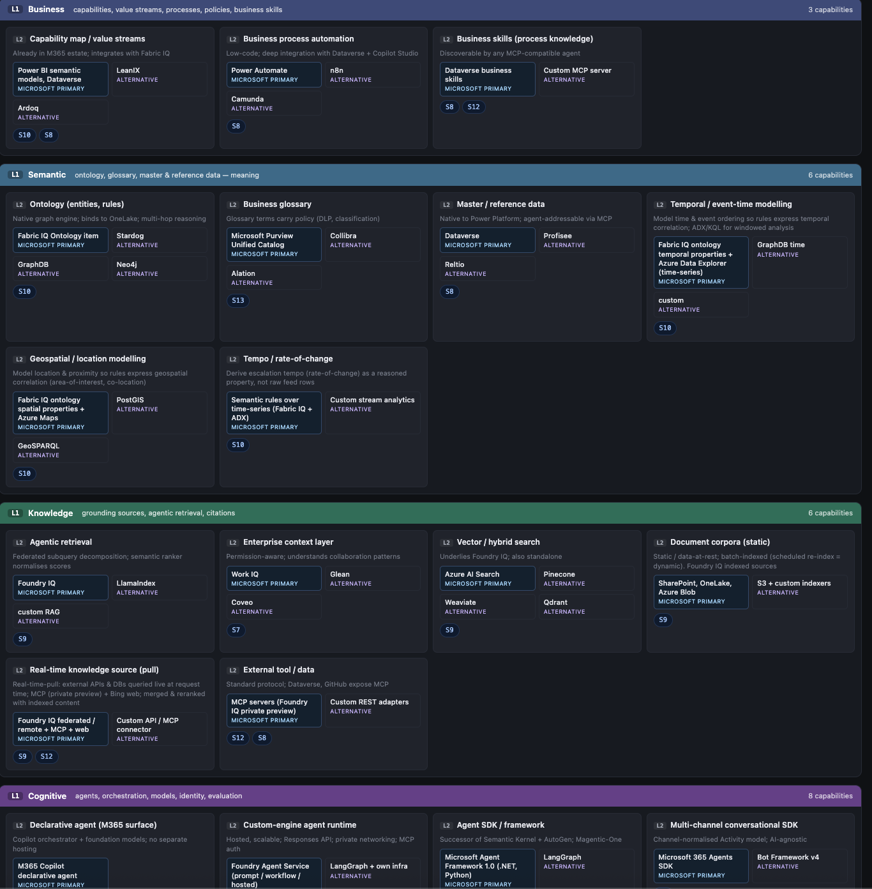
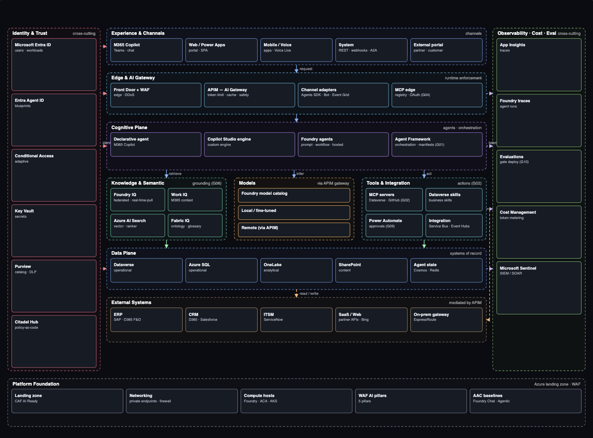
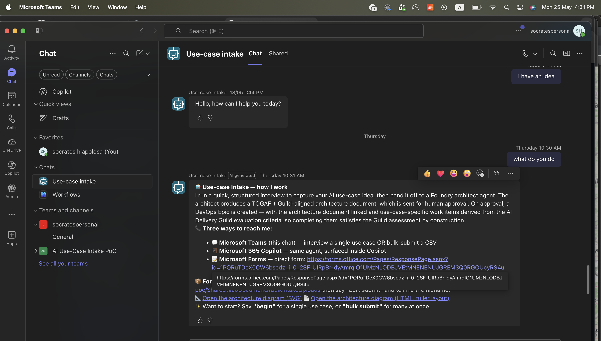
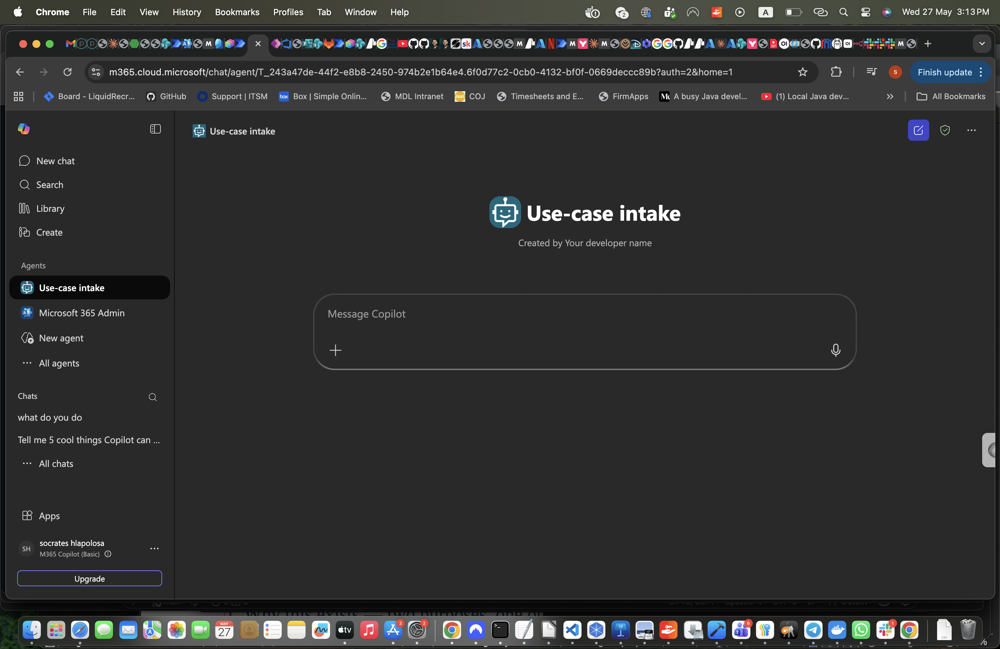
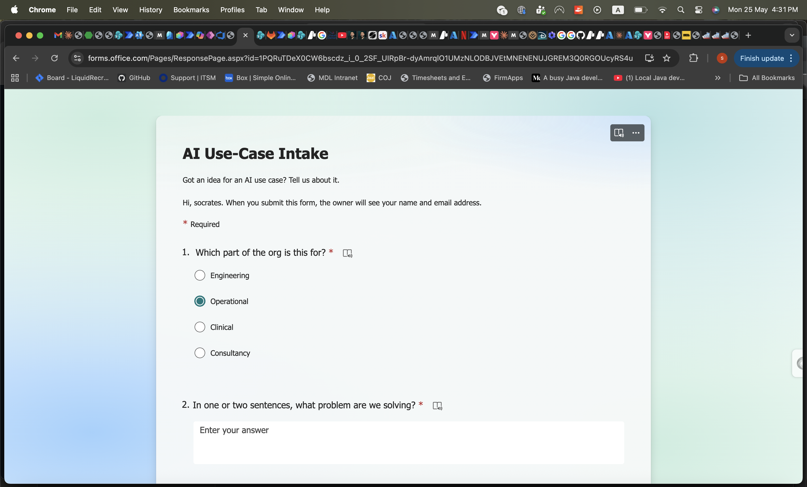
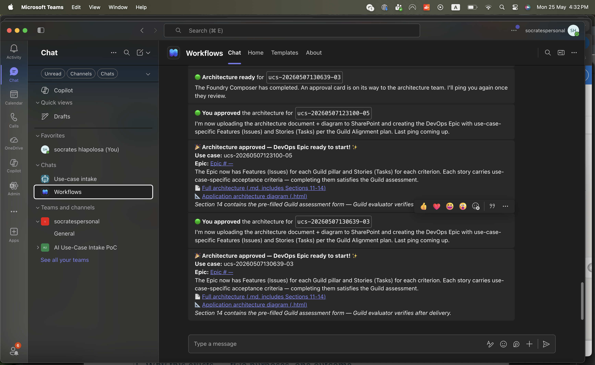
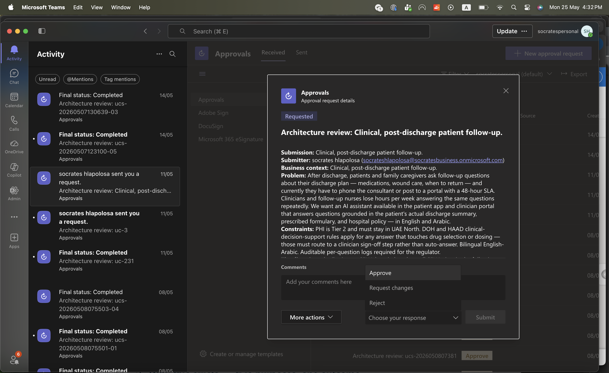
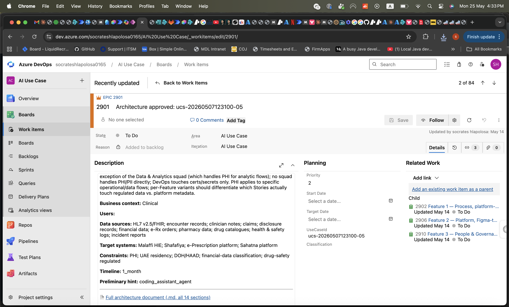
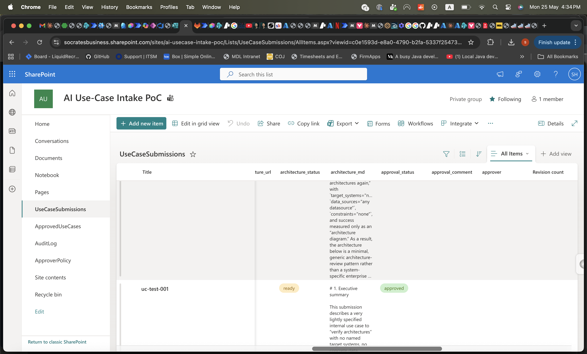

AI adoption is mandatory — and it’s breaking the enterprise.
Situation
AI adoption is now mandatory. 88% of enterprises have deployed AI in at least one major business area; boards and chief executives are demanding scale.
Complication
21%
fully confident in their AI governance
79%
struggling with adoption (↑ double digits year over year)
54%
of senior execs say AI is “tearing the company apart”
The available answers force a bad trade-off: buy a platform (IBM watsonx, Azure AI Foundry, Amazon Bedrock — lock-in, your data leaves your boundary) or hire a systems integrator (Accenture, Deloitte — slow, bespoke, ends in a slide deck). Governance/exposure tooling (Tenable, Credo AI, Holistic AI) detects and gates after the fact. Nobody connectsuse case → governed architecture → running system.
Question
So — how does your organisation get from an AI use case to a governed, running system today, and how long does that take?
From a use case to a governed, architecturally-compliant solution.
You bring a use case. The platform turns it into a running solution that is governed by default and architecturally compliant — composed only from approved components, within the guardrails.
Use case
a business need, in plain terms
→
Platform
Solution space
Agentic solution definition — targeting the chosen stack:
running · governed by default · architecturally compliant
Two ways to get the platform — both include or lead to it:
CAFE — co-create
We realise the platform with you, in your estate (sovereign or hosted). You adopt and own the framework.
Gateway — SaaS
The platform as a product — your infrastructure or hosted. Buy it; run use cases from day one.
The platform has two spaces: the solution space creates the solution; the execution space realises it for the specific use case. CAFE co-creates the platform; Gateway delivers it as SaaS. The next slides detail CAFE (the method) and Gateway (the product).
The metaphor · the platform is a factory
Build the factory in-house, or outsource it. Same blueprint, same outputs.
A factory has a blueprint, production lines, and a floor they run on. CAFE plays each role, in order — and your only real choice is who operates the floor. Either way, the outputs land in your infrastructure.
The factory · three layers
BLUEPRINT
CAFE — the spec
Domains, M1–M5 artifacts, guardrails. The contract every production line must honour. Identical in both modes.
PRODUCTION LINES
CAMs — per manufacturer
Traditional Cloud · Agentic AI · Sovereign. Each CAM is a CAFE-compliant line; multiple lines can run on one floor.
FLOOR
Factory floor — the cluster
Where the lines actually run. Production lines turn use cases into deployable services as outputs.
Who operates the floor — the only real choice.
Build in-house · you own the factory
CAFE + CAMs → your factory
You consume the CAFE spec + CAMs as artifacts and stand the factory up yourself.
You operate the floor on your infrastructure; pick which production lines to enable.
You can add new CAMs (new manufacturers) over time — same blueprint contract.
Outsource · Gateway runs the factory
We run the floor; products land in your estate
We operate the factory floor as SaaS; you configure which production lines to enable.
Outputs — running services — deploy to your subscription / your infrastructure.
No lock-in: same CAFE spec means taking the floor in-house later is a migration of operation, not architecture.
What stays the same in both modes: the CAFE spec, the CAMs you choose to enable, multi-line composition (one floor can run Traditional + AI lines side by side), and where the products end up (your infrastructure). Only the operator of the floor differs. The next slides detail the blueprint (CAFE) and the floor we run for you (Gateway).
The answer · CAFE — the method
CAFE composes from a governed artifact set.
Composable AI Framework for Enterprise — 7 governed domains operationalised as five interlocking artifacts (M1–M5). The closed component set + enforced guardrails make the output governed by construction.

M4 — Technical Capability Map: the closed set of governed components, organised by domain.

M5 — Reference Architecture: composed only from M4 components, within the M3 guardrails.
Foundations · M1–M3 (M4 & M5 compose on top of these)
M1
Topology
Agent typology — the allowed archetypes and their determinism tiers (what kinds of agents may exist).
M2
Decision tree
Routing — how an incoming use case is classified and sent to the right archetype.
M3
Guardrails
OWASP-aligned invariants every component must satisfy — enforced, not advisory.
🛡️
Security · Citadel — built into the architecture
The M5 reference architecture ships secure-by-default on Microsoft’s Foundry Citadel pattern: Entra ID identity, Microsoft Defender for AI (threat detection + red-teaming), Purview (data governance / sensitivity labels), API Management AI gateway, and the Foundry control plane for observability + evaluations. Azure-Samples/foundry-citadel-platform
The answer · Gateway — the product
Gateway runs the method.
Gateway is itself a reference implementation of the M5 reference architecture
Gateway eats its own dog food: it’s built on the very M5 architecture it generates, and its flagship use case is the use-case agent — the agent that intakes a use case, composes a governed architecture, and hands off to provisioning.
app.gateway.ai/compose
▦ GatewayComposeCatalogGovernanceRuns
New use case
Deploy a use-case agent — intake a business use case, classify intent, compose a governed M5 architecture, then hand off to provisioning.
SovereignHosted
AI ✓Traditional ✓
Generate architecture →
Composed architecture · use-case agent
Intake→Intent classify
Compose M5 (agent)→Govern → Provision
Governance scorecard
Identity100%
DLP92%
Eval gate78%
Audit100%
Domains6/7
Provision ▸ KubeVelaProvision ▸ Azuregoverned ✓
Where it runs — Gateway SaaS owns the solution space; the execution space stays in your environment.
Gateway SaaS · we run
Solution space
Intake the use case (the use-case agent)
Compose the governed, M5-compliant architecture + governance
Hand the deployable solution to your environment ▸
Your environment · your subscription & tenant
Execution space
The realised solution runs on your subscriptions / instances
Presents to users in Microsoft Teams
Reads your systems of record — data never leaves your boundary
The solution for the use case belongs to you, so it runs where your users and data are — your subscriptions, Teams, your systems of record. Gateway-as-SaaS composes it; your environment executes it.
The proof · demo
Accounts-Payable invoice exception handling
One operational flow, two halves — deterministic (traditional) and agentic (AI) — both governed by default. The highlighted cards show where Gateway + CAFE contribute.
Gateway provisions the traditional backbone Open Application Model → implementation runtime applies it. Deterministic, automated.
Gateway composes the agentic layer Azure AI Foundry / Copilot Studio (enterprise) or Claude Code / local agents (sovereign).
CAFE generates the governance Produced live as the system composes — not bolted on after, not a tool that just says “no.”
Sweet spot: detection/matching is deterministic; the resolution is agentic. Demo safety: present the highest reliably-ready tier; control-room fallback to a pre-built walkthrough. Same-shape alternatives: order/fulfillment exception management; information-technology incident triage.
The proof · live demo · 1 of 4
Submit a use case.
A business user describes the idea in plain terms — via the Use-case Intake agent in Microsoft Teams, Microsoft 365 Copilot, or the Microsoft Form. No template, no architecture knowledge required.

Teams · Use-case Intake: the agent explains how it works — three ways to reach it — then captures the idea conversationally.

Microsoft 365 Copilot: the same Use-case Intake agent, surfaced inside Copilot.

Microsoft Forms · AI Use-Case Intake: which part of the org it’s for, and — in one or two sentences — what problem we’re solving.
Either channel feeds the same governed intake. The use-case agent classifies intent and hands off to the Foundry architect — no bespoke scoping workshop.
The proof · live demo · 2 of 4
Stay in the loop.
As the use case progresses, the business user is notified right where they work — “Architecture ready” lands in Teams the moment the Foundry Composer finishes composing a governed M5 architecture.

Teams · Workflows: “Architecture ready for ucs-…”, then “You approved the architecture…”, then “🎉 Architecture approved — DevOps Epic ready to start!” — progress is pushed, not chased.
No status meetings, no inbox archaeology. The platform reports its own progress as it composes, governs, and provisions.
The proof · live demo · 3 of 4
Architect reviews & approves.
An approver receives a full approval card in Teams — submitter, business context, the problem, and the constraints — and can Approve, Request changes, or Reject without leaving the chat.

Teams · Approvals: “Architecture review: Clinical, post-discharge patient follow-up” — the human governance gate, with the complete context surfaced inline for an informed sign-off.
Governance is a decision a person makes — with everything they need in one card — not a form to chase down later. The gate is built into the flow.
The proof · live demo · 4 of 4
Outcomes, automatically.
On approval, the platform creates the governed architecture and a DevOps Epic — with Features and Stories ready to build — and tracks the submission as approved in SharePoint. From idea to a backlog the delivery team can start, automatically.

Azure DevOps · Epic 2901: “Architecture approved: ucs-20260507123100-05” — business context, data sources, target systems and constraints in the description, with Features 1/2/3 in Related Work.

SharePoint · UseCaseSubmissions: “uc-test-001” tracked end-to-end — architecture_status ready, approval_status approved, with the architecture_md document attached.
Use case in, governed architecture + a started DevOps backlog out — every step recorded. This is the gap closed: from a business idea to a running, governed system, in days.
In one breath
Governed AI adoption, built and running — not slideware.
We solve the gap between AI ambition and governed delivery — where adoption stalls in pilots, slideware, and ungoverned shadow AI — by turning a use case into a running, governed architecture across both AI and traditional workloads, on sovereign or hosted infrastructure.
Unlike AI platforms that hand you a toolbox, systems integrators that hand you a slide deck, and exposure/governance tools that flag the mess after it exists, we generate governance as the system composes itself and provision it into live infrastructure — we create and implement, governed by default, with no lock-in — which brings a governed, production-ready system in days, not quarters.
vs Tenable (and exposure-management tools). Tenable One AI Exposure discovers sanctioned + shadow AI, correlates exposure, enforces acceptable-use policy, and contains risky agents — it manages the symptom of ungoverned AI after it exists. Gateway removes the cause: the sanctioned, governed system is the turnkey path, so the sprawl never forms. They watch the runtime; we compose it right — complementary, and Gateway can feed per-agent identity + audit trails to a tool like Tenable.